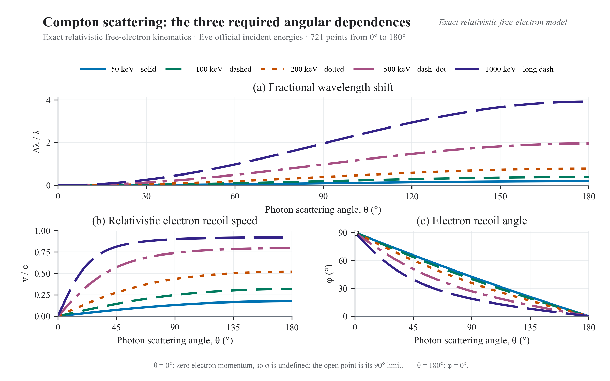
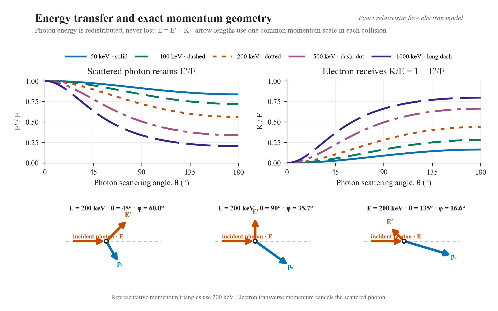

Δλ = 2.426 pm
X-ray photon · free electron · exact conservation
A collision, resolved.
Choose one incident energy and one photon angle. The scattered wavelength, recoil speed, and electron direction follow from a single relativistic momentum triangle.
Live collision geometry
E = 200 keV · θ = 90°
Checking evidence
Resolving energy and momentum
The validated Task 9 collision evidence could not be loaded.
Selected collision results
v = 1.302 × 10⁸ m s⁻¹
defined · below incident axis
- Scattered photon, E′
- 143.741 keV
- Electron kinetic energy, K
- 56.259 keV
E = E′ + K
One model · four equivalent statements
Energy bends. Momentum closes.
The production route uses the Compton shift and relativistic energy. Independent momentum components recover the same speed and direction at every one of the 3,605 official points.α = E / mec²
mec² = 510.998950692 keVΔλ / λ = α(1 − cos θ)
Δλ itself depends only on θ.v / c = √(1 − γ−2)
γ = 1 + (E − E′)/mec²φ = atan2(E′sin θ, E − E′cos θ)
Quadrant-safe momentum geometry.Official five-energy study
Three observables. One angle axis.
All five required energies are shown over 0°–180° with the same colour and line style in every panel. The selected collision is marked without hiding the accepted reference curves.
Required kinematics
200 keV selected · θ = 90°
50 · 100 · 200 · 500 · 1000 keV
Evidence loadingThe validated Task 9 kinematic curves could not be loaded.
50 keV · solid
100 keV · dashed
200 keV · dotted
500 keV · dash–dot
1000 keV · long dash
Absolute shift: one electron Compton wavelength.
The non-relativistic approximation is not used.
The electron recoils below the incident axis.
Optional extension · separately validated
Possible does not mean equally likely.
The official curves answer what happens at a chosen θ. The unpolarized Klein–Nishina extension answers how strongly a free electron scatters into that direction.The validated Task 9 cross-section evidence could not be loaded.
Reproducible acceptance evidence
Every curve has receipts.
The interaction unlocks only after the full data tables, exact endpoints, independent conservation checks, extension report, and media manifest agree.Exact limits, energy–momentum conservation, mass shell, and cross-language anchors.
Quadrature, normalization, Thomson limit, units, and energy ordering.
3,605 exact kinematic rows plus 3,605 Klein–Nishina rows.
300-DPI PNG, editable SVG, embedded-font PDF, and 73-frame animation.


Scientific state
Loading committed evidence
All controls remain disabled until both validated layers agree.
Checking